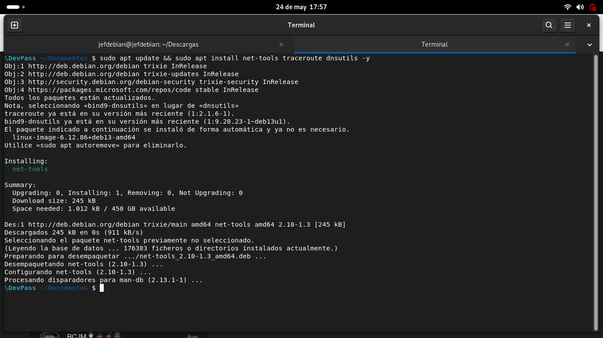
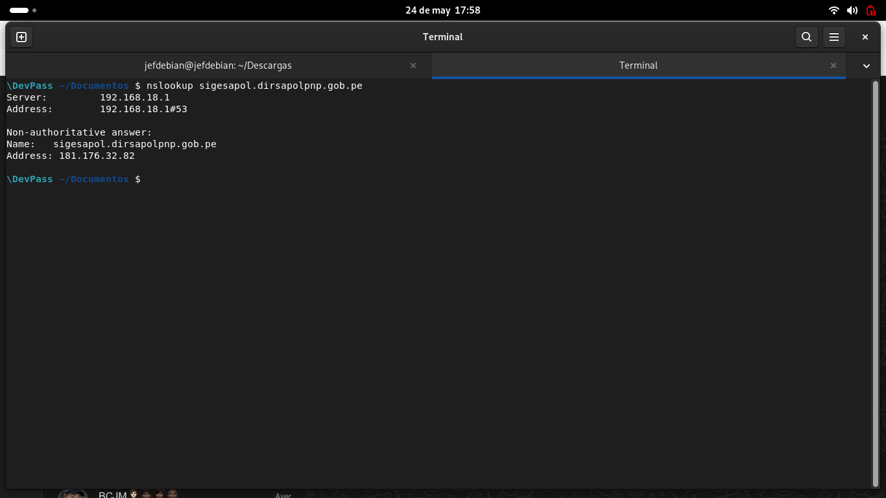
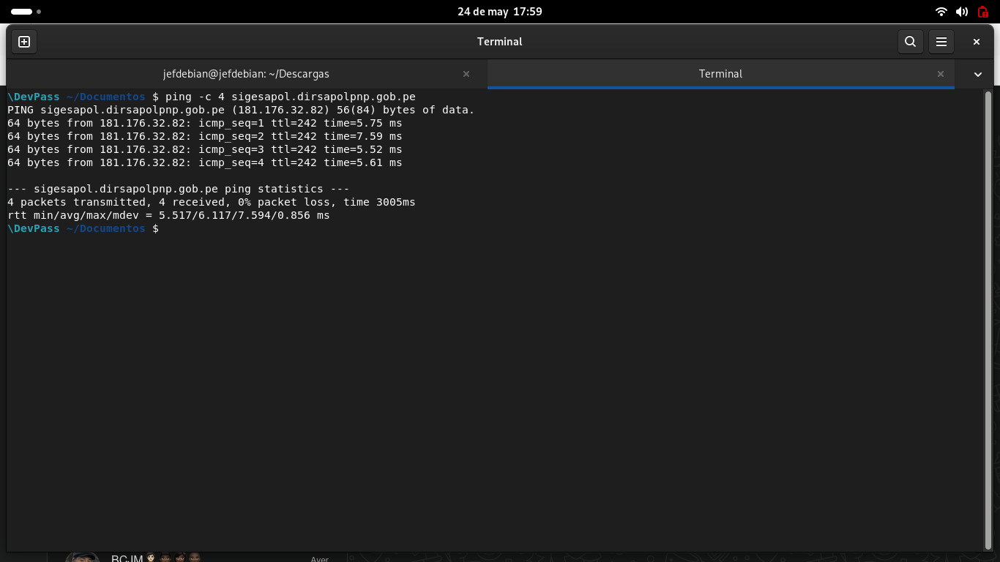
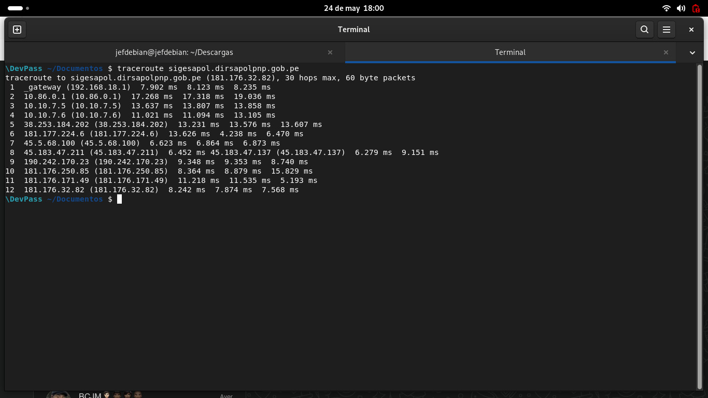
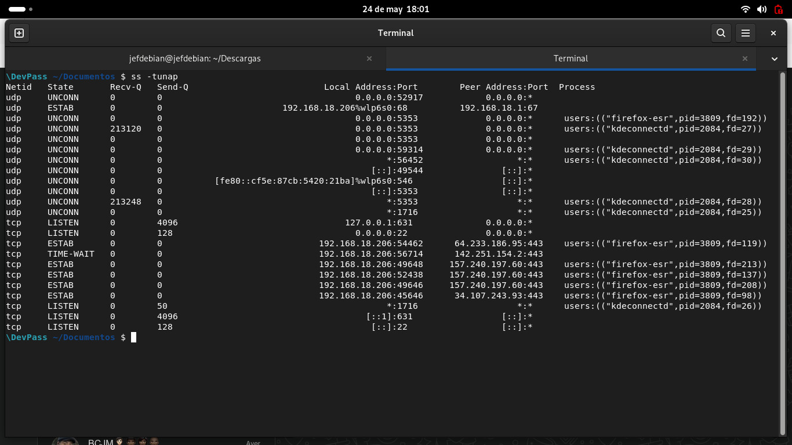
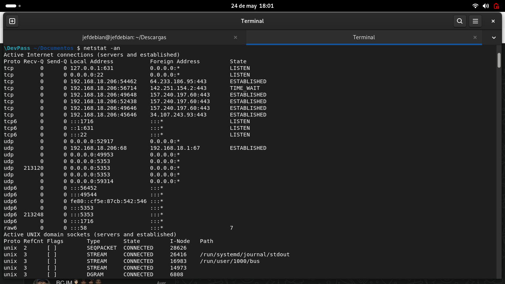
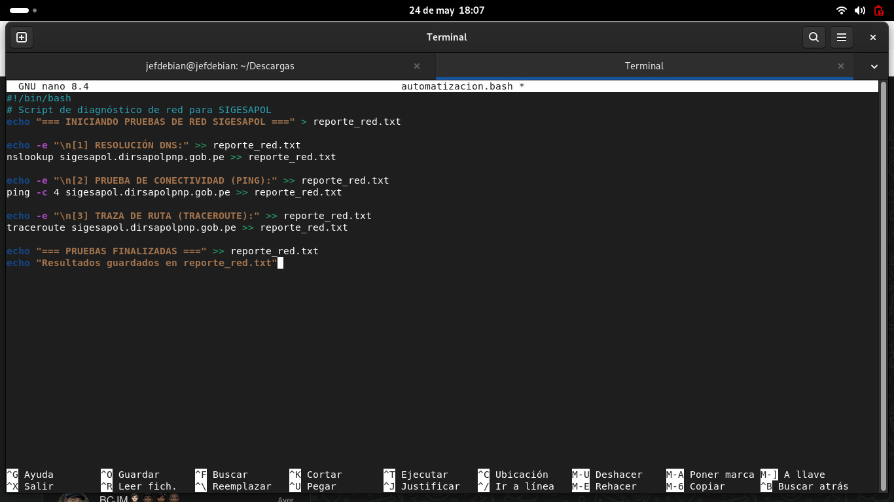
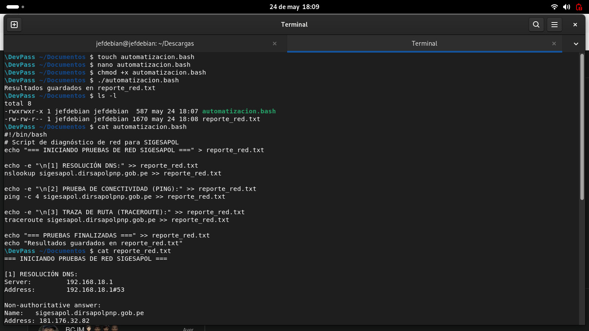
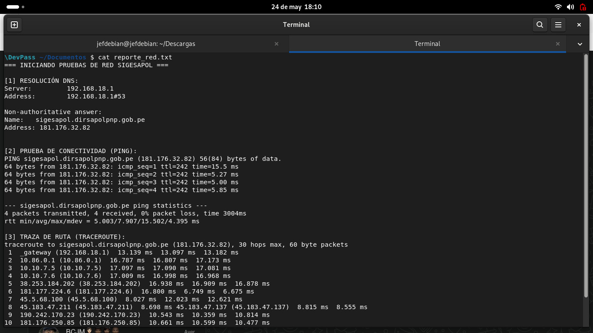
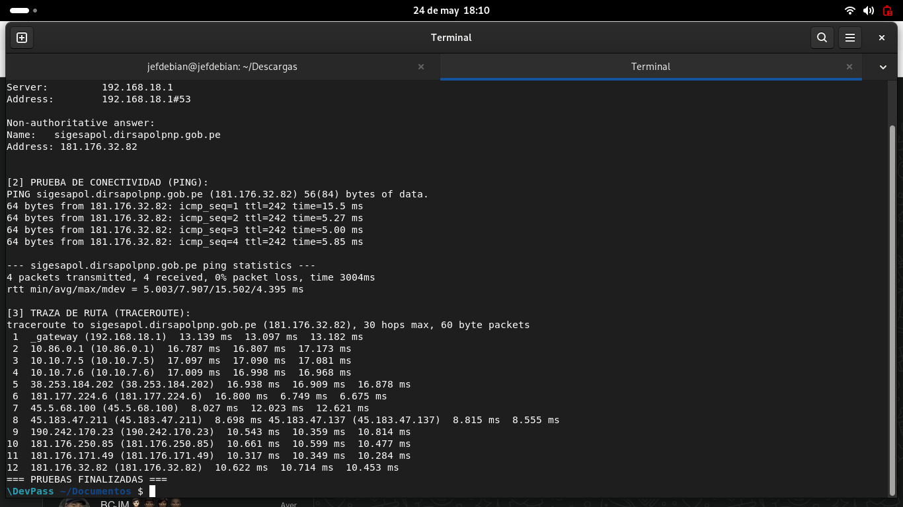

Resumen Ejecutivo
Equipo del Proyecto
Proyecto Integrador · Curso: Software Distribuido · Sección IS8N1 · UPNW · Docente: Ronald Miguel Serrano Hernandez
Resolución DNS — nslookup
Se verifica que el sistema puede traducir el nombre de dominio a una dirección IP mediante el servidor DNS local.
Server: 192.168.18.1
Address: 192.168.18.1#53
Non-authoritative answer:
Name: sigesapol.dirsapolpnp.gob.pe
Address: 181.176.32.82
Prueba de Conectividad — ping
Se envían 4 paquetes ICMP para verificar que el servidor responde y medir la latencia.
PING sigesapol.dirsapolpnp.gob.pe (181.176.32.82) 56(84) bytes of data.
64 bytes from 181.176.32.82: icmp_seq=1 ttl=242 time=15.5 ms
64 bytes from 181.176.32.82: icmp_seq=2 ttl=242 time=5.27 ms
64 bytes from 181.176.32.82: icmp_seq=3 ttl=242 time=5.00 ms
64 bytes from 181.176.32.82: icmp_seq=4 ttl=242 time=5.85 ms
--- sigesapol.dirsapolpnp.gob.pe ping statistics ---
4 packets transmitted, 4 received, 0% packet loss, time 3004ms
rtt min/avg/max/mdev = 5.003/7.907/15.502/4.395 ms
Traza de Ruta — traceroute
Se mapea el camino completo desde el equipo hasta el servidor, identificando cada router intermedio.
Estado de Conexiones — ss / netstat
Se listan las conexiones TCP/UDP activas del sistema para verificar el estado de red en el momento del diagnóstico.
Netid State Recv-Q Send-Q Local Address:Port Peer Address:Port Process
tcp LISTEN 0 128 0.0.0.0:22 0.0.0.0:*
tcp ESTAB 0 0 192.168.18.206:54462 64.233.186.95:443 users:(("firefox-esr",pid=3809))
tcp ESTAB 0 0 192.168.18.206:49648 157.240.197.60:443
tcp ESTAB 0 0 192.168.18.206:52438 157.240.197.60:443
tcp ESTAB 0 0 192.168.18.206:45646 34.107.243.93:443
\DevPass ~/Documentos $ netstat -an
Active Internet connections (servers and established)
Proto Recv-Q Send-Q Local Address Foreign Address State
tcp 0 0 0.0.0.0:22 0.0.0.0:* LISTEN
tcp 0 0 192.168.18.206:... 64.233.186.95:443 ESTABLISHED
...
Script de Automatización — Bash
Se creó un script Bash que automatiza todas las pruebas y genera el archivo reporte_red.txt con los resultados.
#!/bin/bash # Script de diagnóstico de red para SIGESAPOL echo "=== INICIANDO PRUEBAS DE RED SIGESAPOL ===" > reporte_red.txt echo -e "\n[1] RESOLUCIÓN DNS:" >> reporte_red.txt nslookup sigesapol.dirsapolpnp.gob.pe >> reporte_red.txt echo -e "\n[2] PRUEBA DE CONECTIVIDAD (PING):" >> reporte_red.txt ping -c 4 sigesapol.dirsapolpnp.gob.pe >> reporte_red.txt echo -e "\n[3] TRAZA DE RUTA (TRACEROUTE):" >> reporte_red.txt traceroute sigesapol.dirsapolpnp.gob.pe >> reporte_red.txt echo "=== PRUEBAS FINALIZADAS ===" >> reporte_red.txt echo "Resultados guardados en reporte_red.txt"
\DevPass ~/Documentos $ nano automatizacion.bash
[Se escribe el script en el editor nano]
\DevPass ~/Documentos $ chmod +x automatizacion.bash
\DevPass ~/Documentos $ ./automatizacion.bash
Resultados guardados en reporte_red.txt
\DevPass ~/Documentos $ ls -l
total 8
-rwxrwxr-x 1 jefdebian jefdebian 587 may 24 18:07 automatizacion.bash
-rw-rw-r-- 1 jefdebian jefdebian 1670 may 24 18:08 reporte_red.txt
Evidencias de Terminal
Capturas de pantalla del proceso completo ejecutado en Debian 13 Trixie. Click en cada imagen para ampliar.












Reporte Generado — reporte_red.txt
Archivo de texto plano generado automáticamente por el script. Contiene todos los resultados del diagnóstico.
=== INICIANDO PRUEBAS DE RED SIGESAPOL === [1] RESOLUCIÓN DNS: Server: 192.168.18.1 Address: 192.168.18.1#53 Non-authoritative answer: Name: sigesapol.dirsapolpnp.gob.pe Address: 181.176.32.82 [2] PRUEBA DE CONECTIVIDAD (PING): PING sigesapol.dirsapolpnp.gob.pe (181.176.32.82) 56(84) bytes of data. 64 bytes from 181.176.32.82: icmp_seq=1 ttl=242 time=15.5 ms 64 bytes from 181.176.32.82: icmp_seq=2 ttl=242 time=5.27 ms 64 bytes from 181.176.32.82: icmp_seq=3 ttl=242 time=5.00 ms 64 bytes from 181.176.32.82: icmp_seq=4 ttl=242 time=5.85 ms --- sigesapol.dirsapolpnp.gob.pe ping statistics --- 4 packets transmitted, 4 received, 0% packet loss, time 3004ms rtt min/avg/max/mdev = 5.003/7.907/15.502/4.395 ms [3] TRAZA DE RUTA (TRACEROUTE): traceroute to sigesapol.dirsapolpnp.gob.pe (181.176.32.82), 30 hops max 1 _gateway (192.168.18.1) 13.139 ms 13.097 ms 13.182 ms 2 10.86.0.1 (10.86.0.1) 16.787 ms 16.807 ms 17.173 ms 3 10.10.7.5 (10.10.7.5) 17.097 ms 17.090 ms 17.081 ms 4 10.10.7.6 (10.10.7.6) 17.009 ms 16.998 ms 16.968 ms 5 38.253.184.202 16.938 ms 16.909 ms 16.878 ms 6 181.177.224.6 16.800 ms 6.749 ms 6.675 ms 7 45.5.68.100 8.027 ms 12.023 ms 12.621 ms 8 45.183.47.211 8.698 ms 8.815 ms 8.555 ms 9 190.242.170.23 10.543 ms 10.359 ms 10.814 ms 10 181.176.250.85 10.661 ms 10.599 ms 10.477 ms 11 181.176.171.49 10.317 ms 10.349 ms 10.284 ms 12 181.176.32.82 10.622 ms 10.714 ms 10.453 ms === PRUEBAS FINALIZADAS ===
Escaneo de Puertos y OS — nmap
Se ejecuta un escaneo avanzado SYN Stealth + UDP + detección de servicios y sistema operativo contra la IP del servidor SIGESAPOL. El análisis tardó 1369.64 segundos y reveló la presencia de un firewall/load balancer.
Host discovery disabled (-Pn). All addresses will be marked 'up'
Starting Nmap 7.95 ( https://nmap.org ) at 2026-06-08 22:00 -05
NSE: Loaded 157 scripts for scanning.
Initiating SYN Stealth Scan at 22:00 · Scanning 181.176.32.82 [1000 ports]
Completed SYN Stealth Scan at 22:01, 101.20s elapsed (1000 total ports)
Initiating UDP Scan at 22:01 · Completed UDP Scan at 22:03, 101.48s elapsed
Initiating Service scan at 22:03 · Scanning 1000 services...
Completed Service scan at 22:11, 467.70s elapsed
Initiating OS detection (try #1) against 181.176.32.82
Completed Traceroute at 22:11, 0.09s elapsed
All 2000 scanned ports on 181.176.32.82 are in ignored states.
Not shown: 1000 filtered tcp ports (no-response), 1000 open|filtered udp ports
Device type: firewall|load balancer
Running: F5 Networks embedded, F5 Networks TMOS 11.1.X|11.4.X|11.6.X|9.1.X
OS CPE: cpe:/o:f5:tmos:11.1 cpe:/o:f5:tmos:11.4 cpe:/o:f5:tmos:11.6 cpe:/o:f5:tmos:9.1
Network Distance: 13 hops
TRACEROUTE (using proto 1/icmp)
HOP RTT ADDRESS
1 2.09 ms 192.168.1.1
2 8.28 ms 192.168.18.1
3 8.47 ms 10.86.0.1
4 12.55 ms 10.10.7.5
5 7.80 ms 10.10.7.6
6 8.06 ms 38.253.184.202
7 8.01 ms 181.177.224.6
8 8.08 ms 45.5.68.100
9 90.44 ms 45.183.47.211
10 63.26 ms 190.242.170.29
11 10.49 ms 181.176.250.89
12 10.64 ms 181.176.171.49
13 10.68 ms 181.176.32.82 🎯 DESTINO
Nmap done: 1 IP address (1 host up) scanned in 1369.64 seconds
Raw packets sent: 4119 (188.616KB) | Rcvd: 16 (1.122KB)
Verificación HTTPS — curl
Se verifica el certificado SSL/TLS y las cabeceras HTTP del servidor usando curl -k -I. El servidor responde con HTTP/1.1 302 redirigiendo al login con Apache/OpenSSL y framework Laravel.
HTTP/1.1 302 Found
Date: Tue, 09 Jun 2026 02:50:40 GMT
Server: Apache/2.4.6 (Red Hat Enterprise Linux) OpenSSL/1.0.2k-fips
Cache-Control: no-cache, max-age=0
Location: https://sigesapol.dirsapolpnp.gob.pe/auth/login
Set-Cookie: XSRF-TOKEN=eyJpdiI... (token Laravel)
Set-Cookie: laravel_session=eyJpd... httponly; Max-Age=2400; path=/
Expires: Tue, 09 Jun 2026 02:50:40 GMT
X-UA-Compatible: IE=edge
X-Content-Type-Options: nosniff
Content-Type: text/html; charset=UTF-8
Monitor de Procesos — htop
Se monitorea el estado del sistema local durante la ejecución de las pruebas. Se observa el consumo de recursos en tiempo real con htop mientras el navegador y el escaneo Nmap operan en paralelo.
CPU[1] ████████████░░░░░░░░ 11.2% Load average: 2.07 2.15 1.35
CPU[2] ████████████████░░░░ 18.3% Uptime: 00:11:19
CPU[3] ████████████░░░░░░░░ 15.6%
Mem[████████████████████░░░░░░░░░░] 2.58G/6.74G
Swp[░░░░░░░░░░░░░░░░░░░░░░░░░░░░░] 0K/6.96G
PID USER PRI NI VIRT RES SHR CPU% MEM% TIME+ Command
3471 debianjef 20 0 26.5G 293M 101M 13.9 4.3 0:21 firefox-esr (contentproc)
3906 debianjef 20 0 6848 5484 3072 7.7 0.1 0:00 htop
1839 debianjef 20 0 1916M 108M 70388 6.2 1.6 0:21 Xorg vt2
2063 debianjef 20 0 4752M 249M 130M 5.3 3.6 0:33 gnome-shell
3541 debianjef 20 0 680M 50820 40320 4.3 0.7 0:04 gnome-terminal-server
2705 debianjef 20 0 19.2G 437M 223M 2.4 6.3 0:34 firefox-esr
3070 debianjef 20 0 11.5G 880M 120M 2.4 12.8 2:46 firefox-esr (contentproc)